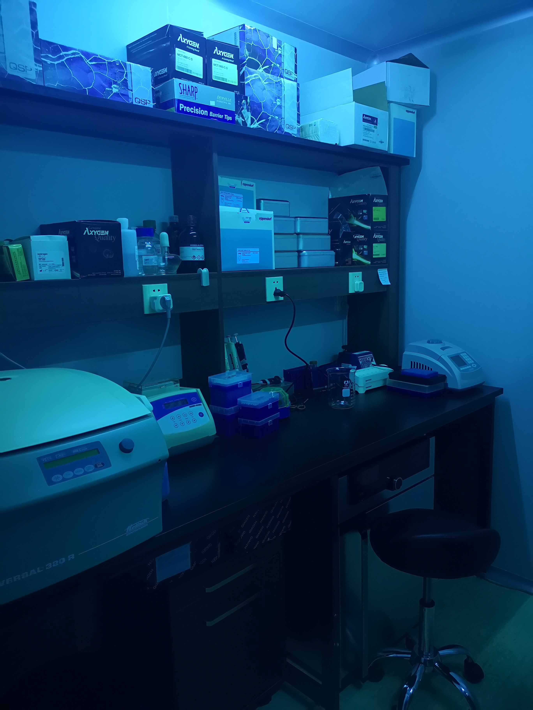
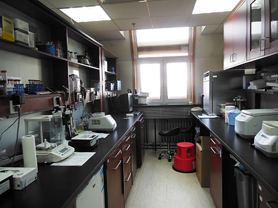
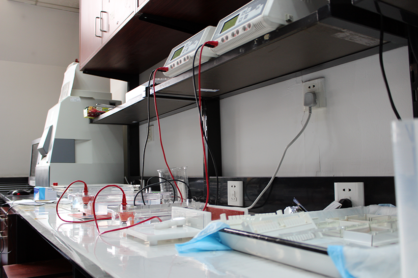
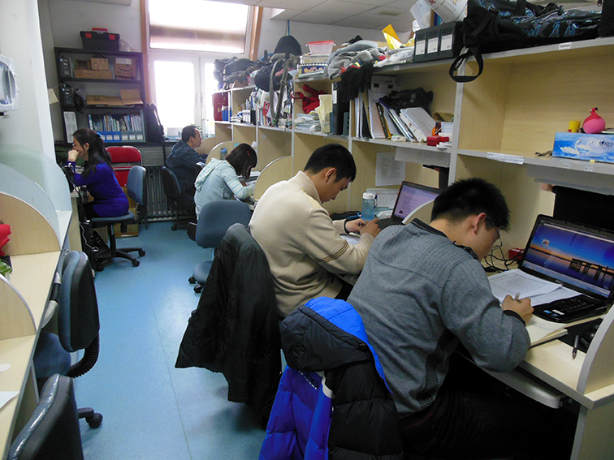
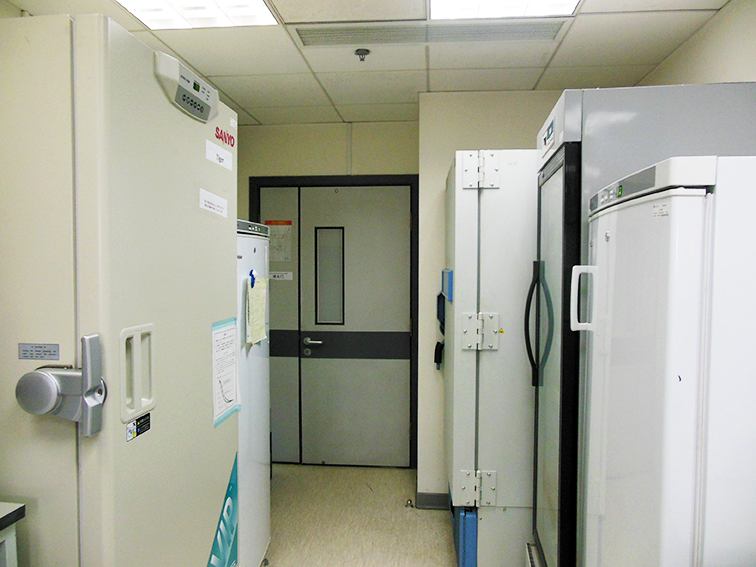
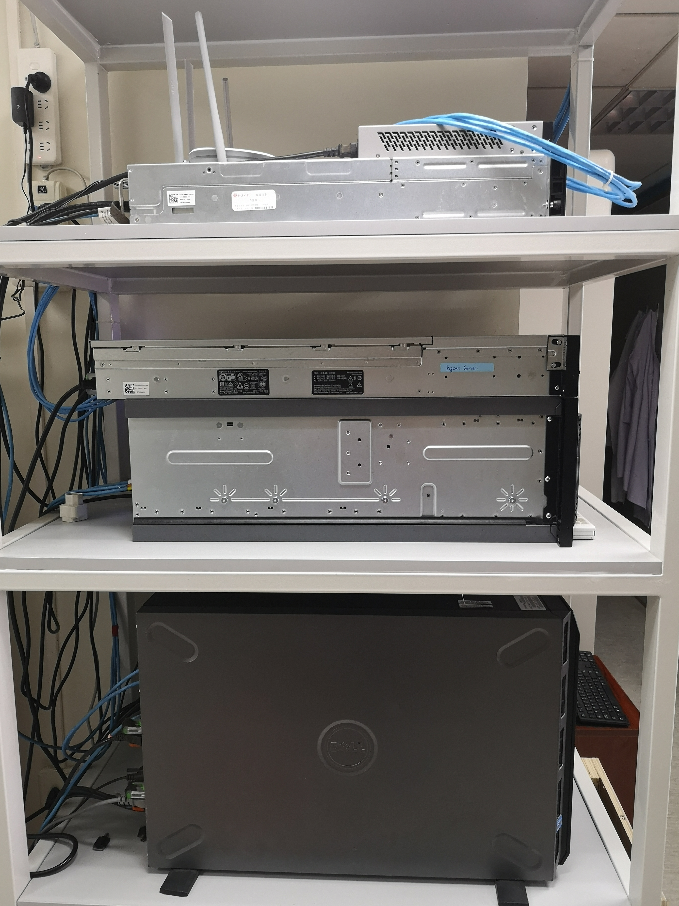

Facilities
Ancient DNA Lab
|  |
|---|
|  |
|  |
|  |
|  |
|  |
Pre-PCR Lab
Processing of samples from modern tissues, such as muscle and blood, do not require the kind of precautions that we take when working with aDNA, special facilities are not needed. All such DNA/RNA preparation and setups are done at the Pre-PCR lab shown here that is at Room 639 outside the aDNA lab area.
Post-PCR Lab
The Post-PCR lab is at Room 632 that is completely separated from the pre-PCR or aDNA rooms shown above, and is dedicated for PCR and all post-PCR activities. No materials emanating from this lab should ever return to the pre-PCR labs.
Office Zone
When they are away from bench or fieldwork, PI, postdocs, students and staff can be found at Office 632, working on their project preparation, data analysis, writing, reading, brainstorming, coursework, or accessing the lab’s digital resources or reprint collection. Microwave, food refrigerator, water fountain, and snack station are also located here. Food and drinks are only allowed in this area and cannot be carried to any of the experimental areas.
Biological Sample Repository
We store tens of thousands of biological samples (e.g., tissue, muscle, organ, blood, cell lines, skin biopsy, bones, pelts, teeth, and scats etc.) from modern or ancient samples at the lab. Depending on sample type, the samples are stored at liquid nitrogen freezer, -80°C deep freezer, -20°C freezer, 4°C refrigerator, or desiccated at room temperature. These specimens come from a variety of localities and species we have conducted projects. The repository has provided an invaluable and sustainable resource platform for a broad array of research projects in genomic diversity, comparative genomics, evolution, and phylogeography. We acknowledge the kind assistance and collaboration from the Laboratory of Genomic Diversity, National Cancer Institute, USA (Chief: Dr. Stephen O’Brien) for development of the repository.
Database and Server
All biological samples are digitally inventoried, barcoded, managed, and monitored through our specially designed database, which is maintained and managed by dedicated staff. The database is multifunctional and is being daily used for various laboratory management tasks including reagent ordering, equipment inventorying, genetic data storage, and research project management.
Our lab is equipped with an in-house UNIX server for computational work in high throughput genome sequencing data analysis, phylogenetic and population genetic data analysis.
Conference Room
Lab meetings are usually held at Room 411 of the New Life Science Building.